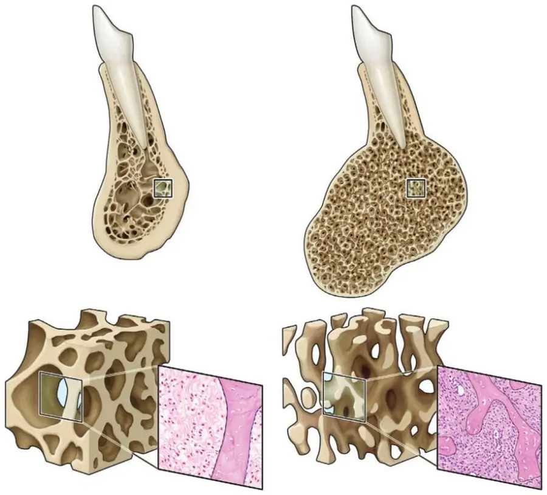
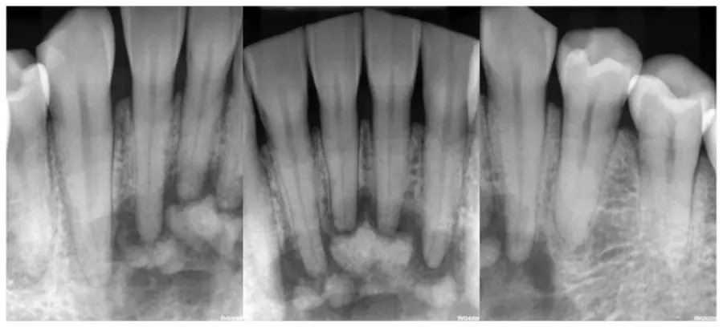

نسخه استخراجشده؛ ترجمه یا تأیید علمی انجام نشده است. وضعیت: captured
پیش از هر چیز، یک هشدار واژگانی که هم برای دندانپزشک و هم برای بیمار مهم است: «در بستر استخوان، اصطلاح «دیسپلازی» به معنای پیشسرطانی بودن فرایند نیست. این برخلاف کاربرد همین واژه در بستر اپیتلیوم است، جایی که دیسپلازی اپیتلیالی پیشسرطانی است.» و «دیسپلازیهای استخوانی نئوپلاسم نیستند و نباید مانند آنها مدیریت شوند.»

و تعریف: در دیسپلازی سمنتو-اوسئوس، «یک یا چند ناحیه از متابولیسم طبیعی استخوان تغییر میکند و استخوان اسفنجی با مخلوطی از بافت همبند فیبروز و مقادیر متغیری از استخوان نابالغ جایگزین میشود».
و دو شکلش، تنها بر پایهی گستره: PCOD (پریاپیکال) شکل موضعیتر است و یک سکستانت را درگیر میکند؛ FCOD (فلورید) شکل گستردهتر است و دو سکستانت یا بیشتر. در برخی موارد FCOD یک روند خانوادگی دیده میشود.
و سه مرحلهی بلوغ — که کل تفسیر این ضایعه بر آن سوار است:
پس منطق تصویریاش این است: رادیولوسنت شروع میکند، از مرکز اوپک میشود، و در پایان یک حلقهی رادیولوسنت محیطی باقی میگذارد. اگر این توالی را بفهمی، همهی ظاهرهای ممکن این ضایعه را توضیح دادهای.
و پروفایل بالینی PCOD: دههی چهارم و پنجم زندگی، شایعتر در زنان، و شایعتر در جمعیتهای غیرقفقازی. معمولاً اتفاقی کشف میشود، و پالپ دندانهای مجاور وایتال است.
و مهمترین عارضهی این بیماری، از یک سازوکار عروقی میآید: «با بالغ شدن ضایعات و رسوب استخوان غیرطبیعی بیشتر، خونرسانی میتواند مختل شود — وضعیتی که احتمالاً به افزایش استعداد ابتلا به عفونت میانجامد.» و به همین دلیل: «توسعهی استئومیلیت بهویژه وقتی نگرانکننده است که ناهنجاریها در بالغترین و رادیواوپکترین حالت خود باشند.»
محل: اپیسنتر در ناحیهی پریاپیکال دندانها و درون زائدهی آلوئولار است (بهندرت کمی کرونالتر، نزدیک یکسوم آپیکالی ریشه)؛ و در مندیبل، اپیسنترها بالای کانال آلوئولار تحتانیاند.

و مهمترین نشانهی تصویری این ضایعه: «یک حاشیهی رادیولوسنت با پهنای متغیر که مرکز رادیواوپک را احاطه میکند» — هرچند گاهی دیدنش دشوار است. در بیرون این حلقه، اغلب استخوان اسکلروتیک با ضخامت متغیر دیده میشود.
و ساختار داخلی میتواند سه ظاهر بگیرد: از یک ناحیهی مینرالیزهی کوچک و بیضی با ظاهر «پشم پنبه» (cotton-wool)، تا الگوی گرانولر یا «شیشهی مات» که شبیه دیسپلازی فیبروست، تا یک ناحیهی آمورف و نامنظم و بزرگ از کلسیفیکاسیون.
و اثر بر اطراف: کانونهای کوچک فک را متسع نمیکنند؛ ولی بزرگترها میتوانند. و یک تفاوت مهم با دیسپلازی فیبرو: «سطح استخوان معمولاً به شکل دوکی (fusiform) مانند دیسپلازی فیبرو متسع نمیشود، بلکه مرز موجهای نامنظم نشان میدهد». در ماگزیلا کف سینوس را بالا میبرد و در مندیبل کانال را به پایین.
و حالا مهمترین افتراق کل درس — و سادهترین راهحلش: «کانونهای زودرس PCOD رادیولوسنتاند، و مهمترین تشخیص افتراقی استئیت رارفاکتیو است. گاهی PCOD تنها با ویژگیهای رادیولوژیک قابل تفکیک نیست. در چنین مواردی، تشخیص نهایی باید بر اطلاعات بالینی تکیه کند، مانند تست حیات پالپ دندان مجاور.»
و سه افتراق دیگر با جداکنندههایشان:
و افتراق FCOD از بیماری پاژه و استئومیلیت: پاژه «استخوان کل مندیبل را عمومیتر درگیر میکند» و اغلب پلیاوستوتیک است؛ در حالی که FCOD چندکانونی با استخوان طبیعی در میان کانونها است. و از استئومیلیت با مرز بهتر تعریفشده، حلقهی رادیولوسنت داخلی و مرز اسکلروتیک پیرامونی جدا میشود — هرچند کانونهای اوپک FCOD میتوانند شبیه سکسترا به نظر برسند.
و مدیریت — که برخلاف انتظار، بیشتر پیشگیری است تا درمان: «دیسپلازیهای سمنتو-اوسئوس نیازی به درمان ندارند»، ولی گرفتن یک پانورامیک برای تعیین گستره ارزش دارد. و چون بالغترین ضایعات مستعد عفونت ثانویهاند، بیمار باید به بهداشت دهانی مؤثر تشویق شود. اگر به استئومیلیت شک داری، CBCT یا MDCT گسترهی درگیری را نشان میدهد.
و یک تشبیه که میسازد و ارزش حفظ کردن دارد: اگر دندانها کشیده شده و ریج آلوئولار آتروفی زیادی داشته باشد، «کانونهای استخوان دیسپلاستیک ممکن است به سطح مخاط برسند، درست همانطور که سنگها در بتن کهنه و ساییده بیرون میزنند». این کانونها میتوانند مخاط را — بهویژه زیر دنچر — پرفوره کنند و ثانویاً عفونی شوند؛ و آنگاه کانونهای آواسکولار استخوان آمورف به سکسترای بزرگ تبدیل میشوند.